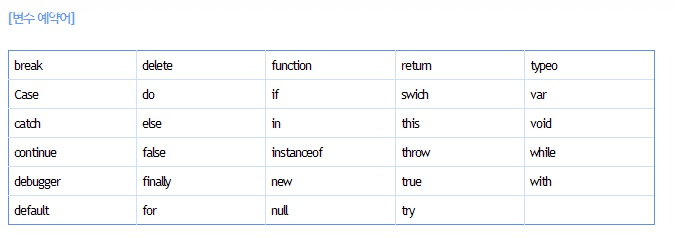

02 자바스크립트 변수선언과 작성법 p.463
변수(variable)란? : 변하는 데이터를 저장하기 위한 일종의 메모리 공간이다.
변수에 대입된 갑슨 항상 마지막에 저자된 데이터값이 출력이 된다.
1. 변수의 종류
1. 전역변수 : 문서 전체에 영향을 주는 변수를 말함.
2. 지역변수 : 함수(function)내에서 선언되어 사용되는 변수로서 그 함수 지역에서만 사용이 가능한 변수 (지역화폐 개념)
2. 변수의 선언
변수 선언시 'var', 'let', 'const'키워드를 변수명 앞에 붙여주어 선언한다.
자바스크립트 표준 최신버전 es6에서 'let'과 'const'사요을 추천한다.
작성법 > let 변수명 or let변수명 = 값
3. 변수이름 작성시 주의사항
- 변수의 첫 문장에 숫자, 기호가 올 수 없다. ex) 01A, 01_aA
- 변수를 작성할때는 반드시 대, 소문자로 작성되어야 한다. ex) aA01, nameYour
- 변수명 사이에는 스페이스(공백)을 사용할 수 없다. ex) count 01
- 변수명은 색상이 변하는 단어(예약어)는 사용할 수 없다. ex) const if, const break등
- 변수명에 특수기호를 사용할 수 없다.(단 $와 _는 사용가능)
- 변수명의 의밀를 담을 수 있는 이름으로 지정하고 일명 낙타봉(카멜표기법)으로 작성할 것을 권장한다. ex) imgname(x) imgName(o)
4. 여러가지의 단어를 조합하여 이름짓는 표기법 4가지
- dash-case : html이나 css에서 '-'기호로 단어와 단어사이에 작성. 클래스명, 아이디명
- snake-case : 주로 html, css에서 '_'기호로 단어와 단어사이에 작성. 클래스명, 아이디명.
- carmel-case : 주로 javascript에서 사용하며 단어와 첫글자는 소문자 중간에 대문자를 사용하는 것이 특징. 낙타의 등처럼 생겼다 하여 '카멜 표기법'이라고 부름.
- pascalCase : 카멜표기법과 유사하지만 첫번째 단어도 대문자로 표시하는 것이 차이점. js 생성자 함수 사용시 사용한다.
